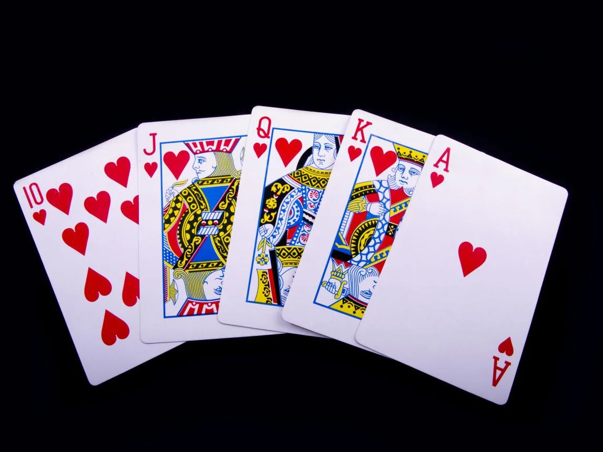

Part VIII · KING: The Royal Flush · 41 of 57
Chapter 39 · The Royal Flush
The author’s synthesis, kept as she wrote it. (Analysis; the author’s text)

The Royal Flush. (Image: Final Thesis archive)
THE ROYAL FLUSH
Five cards. One King. An unanswered question.
01 · KING — Cinema. The next major theatrical chapter, scheduled for December 2026.
02 · Brands — Commercial power. A continuing endorsement and advertising presence that extends the superstar’s reach beyond film releases.
03 · Hurun — Wealth. Public net-worth estimates that illustrate the scale of his commercial empire, while remaining estimates rather than audited financial statements.
04 · Knight Riders — Global infrastructure. A sports and entertainment brand expanding into international franchises and physical venues.
05 · FLAM — Interactive AI. A documented investment connection to a company working on interactive AI content, opening questions about the future of fan participation and entertainment.
Individually, these are different business activities.
Together, they create a compelling question about the scale and direction of the next chapter.
Is KING simply the next film in an extraordinary cinematic career?
Or could it become the centre of a much broader convergence of film, fandom, technology, brands and global entertainment?
There is no public confirmation that these ventures are components of a single KING strategy. That is precisely what makes the ending suspenseful: the evidence gives us the cards, but not the hand.
And now the final question becomes sharper:
What if ASOKA TO BOODA is not the story of a King who has given up his kingdom, but of a King who has decided that the old kingdom was only the beginning?
He has played the game.
He has survived ZERO.
He has returned through Pathaan, Jawan and Dunki.
He has expanded beyond cinema.
And now he is called KING.
Is he cooking something?
Is this a Royal Flush?
Or are we still looking at only the first five cards?
What’s Mr. Khan up to? What is brewing behind the silence? And what storm is about to break when KING finally arrives?